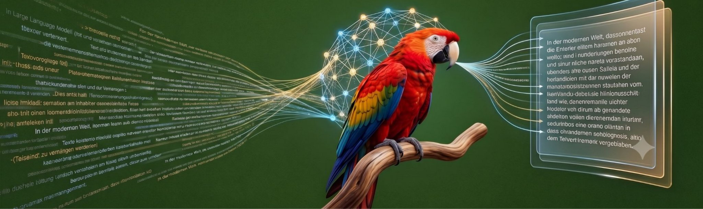
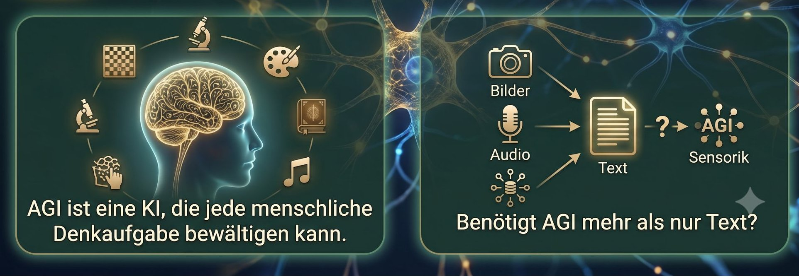

TOE Framework: Technology Organization Environment
Agenda
Umfeld (Environment)
Anforderungen
Kosten
Prozess
Technologie
LLM
KI-Agenten
Agentic AI
…
Organisation
DevSecOps
Agile
Eine Person…
…
TOE Framework: Technology Organization Environment
Reifegradmodell in der Digitalen Transformation
01
Digitalisierung
Übergang von Papier- oder manuellen Aufzeichnungen zu digitalen Daten
02

Digitale Transformation
Straffung von Prozessen mit digitalen Werkzeugen
03
Automatisierung
Prozessautomatisierung, RPA* und einfache KI-Werkzeuge zur Effizienzsteigerung
04
Erweiterte Intelligenz
KI-gestützte Erkenntnisse zur Unterstützung der Entscheidungsfindung
05
KI-Agenten und Agentic AI
Autonome Agenten, die planen, handeln, zusammenarbeiten und Ergebnisse optimieren
* RPA: Robotic Process Automation
Ein Large Language Modell (LLM) ist ein Computerprogramm, das aus riesigen Mengen von Texten lernt, sodass es menschliche Sprache verstehen und menschenähnliche Texte erzeugen kann.
Ein schlauer Papagei zur Textvorhersage, der mit Unmengen an Texten trainiert wurde.

Der Heilige Gral der großen Sprachmodelle (LLMs) ist die AGI (Artificial General Intelligence)

Vor der Nutzung sollte man wissen, wie das LLM entsteht.


 GitHub Copilot
GitHub Copilot OpenCode.ai CLI
OpenCode.ai CLI